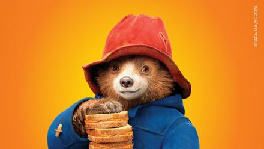

My Favorite Character

Paddington
Paddington is a kind hearted bear from Peru who ends up in London wearing his blue coat and red hat. He loves marmalade sandwiches and always tries to do good even when things go hilariously wrong.
He's polite, curious, and incredibly lovable. Paddington reminds us to treat others with kindness, even when the world gets messy.
Why I love him: He's super cute, funny, and always brings a smile to my face no matter what. Just like Paddington, I try to stay curious and kind 💙🧸